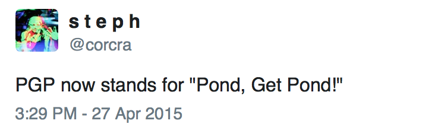

I gave an 'Introduction to PGP'-type talk/tutorial at CryptoHarlem last night. PGP can be a little confusing and it gets a lot of criticism for being unusable, so I tried to focus on the higher-level aspects, like how it works and why you want that. I fear it ended up being a little too theoretical, but my rationale was that a person who understands how PGP achieves what it does will find it less confusing overall. That said, I have always fallen on the 'theory then application' side of the fence when this comes up, so I admit my bias.
I resisted the temptation to make it insufferably long and all-encompassing, so an observer may note that many details have been glossed over. My plan is to incrementally improve it until I can't stand it, so feedback is greatly appreciated. I'm also thinking to make a pgp_102 which covers things like subkeys, key-signing, and anything else that seems advanced-but-actually-useful.
Link to the slides
I think it also bears mentioning that the entire presentation was an excuse to personally indulge in The Noun Project.
And unrelatedly...
